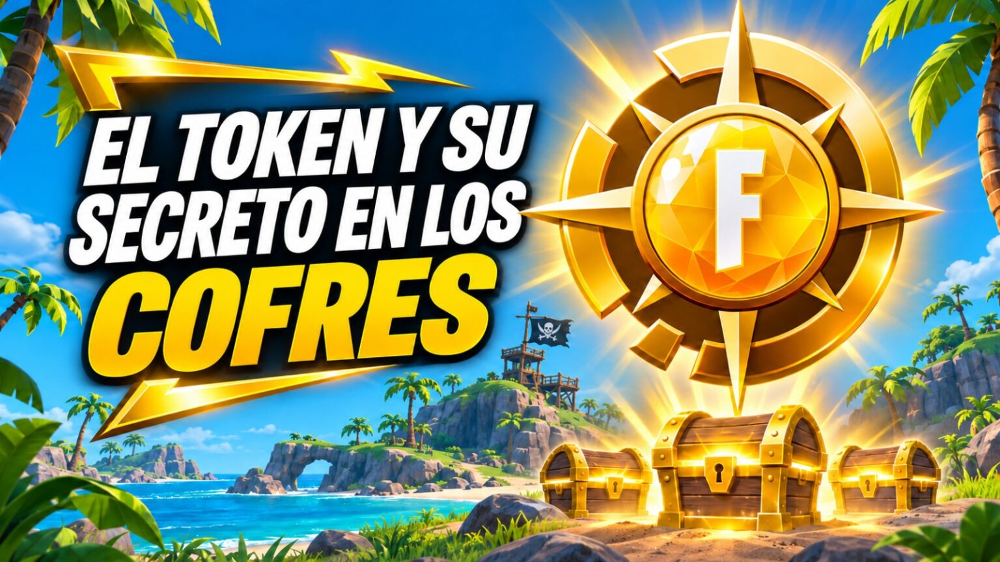

El token de cofres en Fortnite: la guía completa para encontrar tu tesoro pirata

Descubre cómo conseguir el token de cofres en Fortnite, las mecánicas reales y estrategias para encontrarlo en Treasure Hunters. Guía verificada.
Desde que comenzó Treasure Hunters el 1 de noviembre, la comunidad de Fortnite está obsesionada con un objeto que promete cambiar el juego: el token de cofres. No es magia ni truco, es una mecánica real que Epic Games incorporó para esta temporada inspirada en One Piece.
El token de cofres en Fortnite, también llamado Pirate Shop Access Token, es extremadamente raro. Se obtiene de forma completamente aleatoria al abrir cualquier cofre durante partidas de Battle Royale en la isla de Treasure Hunters.
Token de cofres fortnite: Cómo realmente funciona el token de cofres en Fortnite
La mecánica es directa: abres cofres en Battle Royale, y si tienes suerte extrema, uno de ellos contiene el token. Vale cualquier cofre, es absolutamente aleatorio.
Una vez lo tienes en tu inventario, debes canjearlo manualmente. Entra a la tienda oficial de Fortnite, busca el botón «Saquear la tienda de objetos» y haz clic en «Activar ahora». Durante los próximos 14 días podrás reclamar cosméticos de forma gratuita.
El secreto que pocos conocen: el token de cofres se comparte en equipo
Si juegas en dúos, tríos o escuadrones, todos los miembros del equipo reciben automáticamente el token apenas uno de ustedes lo encuentra. Tus probabilidades aumentan exponencialmente si juegas acompañado.
Gavrilut es un portal informativo independiente sin relación oficial con Epic Games ni Fortnite. Este artículo ofrece información basada en datos compartidos por la comunidad.
Qué excluye el token (y por qué importa)
- Bundles y paquetes comprados con dinero real
- Regalos (gifting) a otros jugadores
- Recompensas del Club de Fortnite
- Niveles del Battle Pass
Estrategia real para maximizar tus probabilidades
- Juega en escuadrones para compartir el drop del token.
- Cae en zonas densas con mayor cantidad de cofres por minuto.
- Abre tanto cofres comunes como raros.
Preguntas frecuentes
¿Cuál es la probabilidad de encontrar el token?
Epic Games no ha publicado porcentajes oficiales, solo confirma que es extremadamente raro.
¿Da paVos infinitos?
No. Solo da acceso a reclamar los cosméticos activos en la tienda durante 14 días.
Conclusión
El token de cofres es una mecánica temporal oficial. Jugar en equipo y maximizar el loteo es la mejor vía para conseguirlo antes de que termine la temporada.
Revisado y editado por Gavrilut
Última revisión: 3 de noviembre de 2026.